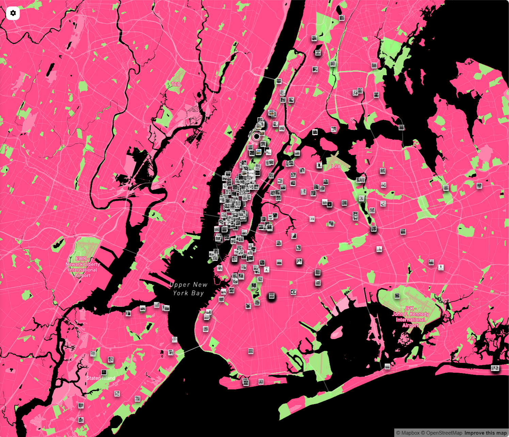
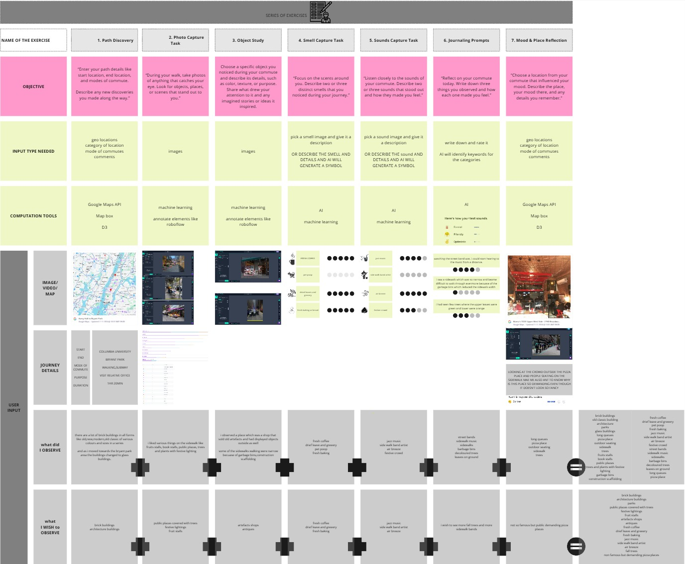

Not just a map of locations —
but a real-time playground of urban experiences.
To resist oblivion commutes,
and embrace engaging odyssey journeys.
This is MEMENTO.

How did it began - The Inception of MEMENTO
Flashbacks that uncover its evolution and the journey from concept to creation.
What if we could gamify the city experience?
This was the germ seed of the idea — a simple, playful thought at its inception. The intention was to explore how I could combine the tools, methods, and skills I was being exposed to in the Computational Design Practices program at GSAPP in Columbia University — computation, design, AI, data-driven mapping — to create something that could reshape the way people experience the city in their everyday lives. How do we feel the city, touch it, smell it, see it? Could our daily commutes become interactive, sensory-rich experiences that deepen our connection with the urban environment?
To explore this further, I developed a documentary research project during the fall semester, where I began investigating my own relationship with the city — through self-documentation exercises, behavioral observations, and analytical mapping. The aim was to understand the problem statement through lived experience: breaking it down into key factors like body pattern, gaze, time, activity, and location, and examining how they interrelate. These insights laid the groundwork for drawing meaningful conclusions — ultimately leading to the creation of the platform: MEMENTO.
Have you ever started a journey,
reached your destination,
but couldn't remember how you got there?
The city felt like a blur,
lost in OBLIVION,
and the experience was disconnected —
as if the journey never really happened.
Through this process, I began to observe a troubling pattern: In today's technologically driven world, our relationship with urban environments has drastically changed. Modern commutes have become monotonous and disconnected, defined by passive interactions with the city. Once moments of observation and exploration, commutes are now dominated by screens, reshaping attentional habits and muscle memory. Gaze patterns, once directed outward toward the environment, now predominantly focus downward, reducing the city to a mere backdrop. This detachment diminishes meaningful engagement with urban spaces, eroding their historical, cultural, and emotional significance.
This realization led to the identification of a core problem!
Oblivion
the state of being unaware or unconscious of what is happening
An ovational study on the disconnect between people and the city, exploring gaze patterns, physical interactions, and the relationship between time, location, and activity during urban commutes.

The exploration of body patterns, gaze, and time highlights how modern commuting behaviors have transformed our relationship with urban environments. Technology has reshaped physical habits, with body patterns reflecting detachment and routine, while gaze has shifted from outward exploration to a default downward focus. Similarly, time, which once fostered instinctive engagement with surroundings, is now compressed and hurried, leaving little space for meaningful connections. These shifts reveal the growing disconnection between people and the city.

Location and activity, however, offer pathways to reclaim this lost engagement. Location holds the power to shape interactions, encouraging discovery and connection, while activity remains a deeply personal factor that transforms commutes into unique journeys. Whether planned, spontaneous, or city-driven, activities allow individuals to build relationships with their surroundings, turning mundane routines into opportunities for exploration. Together, these factors present the potential to reconnect individuals with urban environments, transforming disconnected commutes into meaningful urban experiences.
Odyssey
a long and eventful or adventurours journey or experience
A speculative journey designed for those who want more than a commute, it is for people seeking to connect, engage, interact, and rediscover the city, transforming commutes into engaging, discovery-filled journeys and turning the city into an interactive playground.

Odyssey offers a counterpoint to Oblivion — a reframing of the commute as a meaningful journey. It emphasizes awareness, engagement, and discovery, challenging the assumption that everyday urban routines must be monotonous or unconscious. Instead, Odyssey proposes that even the most ordinary routes can become spaces for reflection, exploration, and interaction with the city.

The idea of Odyssey emerged from a simple yet pressing realization: that digital saturation is dulling our connection to the physical world. As we increasingly experience cities as blurred scenery behind a screen, the Odyssey state calls us to re-tune ourselves to the emotional, sensory, and cultural layers of our surroundings. This isn't a rejection of technology — it's a reorientation. Odyssey leverages technology not to distract, but to enhance presence.

At stake is the growing disconnection between people and place. Odyssey reimagines commutes not as empty transitions, but as opportunities for participatory discovery. It encourages users to become active agents in their environment — transforming passive routines into moments of curiosity, attention, and meaningful interaction with urban life.
Urban Experiences as Mementos
Deconstructing the Urban Experience — to Understand How It Forms, Functions, and Feels.
Urban experiences emerge from the dynamic relationship between people, the city, and the experiences that unfold in between. These entities do not exist in isolation — they are constantly activated through three core actions: intersection, interaction, and interplay.

The Actions: How We Engage
- Intersection - occurs when people and places meet — in motion, in pause, in fleeting moments of presence.
- Interaction - happens when the city responds to our actions and we respond back — visually, sensorially, socially.
- Interplay - is the continuous, evolving dance between the environment and the individual — a layered exchange of meaning, attention, and response.
Together, these actions shape the nature and quality of the urban experience. They determine whether we pass through the city blindly — or engage with it fully.
The Entities: Who and What Create the Experience
- People - bring mood, memory, routine, and perception.
- The City - offers setting, stimuli, rhythm, and unpredictability.
- Experiences - form in the space between — ephemeral, emotional, and deeply personal.
When these entities connect through mindful action, a new kind of journey unfolds. The city becomes more than a backdrop; it becomes a collaborator.
This visual represents one of the early commute archives conducted as an experimental framework to collect real-world user data. Through a structured set of tasks — including path discovery, photo capture, object study, smell and sound mapping, journaling, and mood reflections — diverse inputs such as geolocations, images, sensory notes, and personal reflections were gathered.
This experiment was not just about documentation — it was about decoding how urban experiences unfold during commutes and how they can be meaningfully captured on a digital platform. The archive played a critical role in shaping MEMENTO's design: informing its structure, defining input types, guiding feature development, and mapping how user-generated data could translate into live, discoverable mementos. It also laid the groundwork for categories, visualizations, and interaction models that the platform now enables.
The research revealed that urban detachment doesn't stem from a lack of meaning — but from a lack of active engagement. By paying attention to where we are, what we do, and how we perceive, we begin to reclaim a sense of urban presence. Urban experiences are not just fleeting moments — they are powerful tools for transforming Oblivion into Odyssey, reminding us that every step through the city holds the potential for discovery.
What is MEMENTO?
Understanding the characteristics of MEMENTO the platform.

MEMENTO reimagines how we engage with the city — not as passive commuters guided by algorithms, but as attentive explorers tuned into real-time urban experiences. The platform shifts our focus from screen-based distraction to place-based presence. It's not about checking in, scrolling through feeds, or arriving at a destination. It's about noticing what's unfolding around us — the sounds, sights, encounters, and emotions that make each journey unique.
While most digital platforms demand attention for virtual content, MEMENTO gives that attention back to the physical world. It doesn't reward perfection or popularity — it values presence. What other apps ignore or overlook, MEMENTO elevates: a street-side moment, a passing gesture, a fleeting vibe. This platform isn't built for likes or followers, but for those who want to feel the city, not just move through it.
What MEMENTO Is (and Isn't)
- Not another navigation app — but a platform to re-navigate how we notice the city.
- Not just a place to document what's seen — but to create your own urban moments as mementos.
- Not an app to show destinations — but one that celebrates the journey itself.
- Not designed for screen time — but made for city time.
- Not about permanence or perfection — but about capturing what's fleeting, raw, and real.
- Not another tool to scroll through — but one that invites you to walk through.
- Not a social app for likes — but a quiet space to reflect, feel, and connect.
- Not another place to record for later — but to notice what's happening right now.
- Not a map of what's already known — but a living canvas of urban experiences unfolding in real time.
- Not what other platforms consider 'valuable' — but everything they overlook.
- Not another city app for efficiency — but a gentle reminder to look, slow down, and feel.
- Not built to distract you — but to anchor you to the here and now.
End? Or the real Beginning!
This isn't the conclusion of a project —
it's the start of a movement.
A shift in how we move through our cities,
how we notice, reflect, and reconnect.
Cities don't lack stories.
We've simply stopped paying attention.
MEMENTO is a gentle reminder:
to look closer, feel deeper, and share what usually goes unnoticed.
It's not a tool. It's a mindset.
Not just a platform, but a call to presence.
Thank you for being part of this journey —
from the quiet blur of Oblivion…
to the rich discovery of an Odyssey yet unfolding.
Who's Behind MEMENTO?
Vaibhav Jain - created and designed by
Computation | Spatial Data | Architecture
Designer | Storyteller
MEMENTO is a culmination of my academic and creative journey through the Computational Design Practices program at GSAPP in Columbia University. Over three semesters of research, experimentation, and refinement, MEMENTO was shaped by critical feedback, collaborative learning, and speculative design thinking.
Core Studios and professors That Anchored the Project
Explore, Explain, Propose – Laura Kurgan, Snoweria Zhang
Design in Action – Seth Thompson, Catherine Griffiths
Capstone Project Advisor – Juan Francisco Saldarriaga
Special Thanks To
My peers, mentors, and the entire CDP cohort for the countless conversations, provocations, and encouragement that fueled this work. Every discussion, critique, and shared idea contributed to the making of this platform.